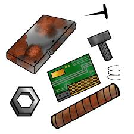

|
I. Introduction
- The Saber is a legendary sword in Blox Fruits, renowned for its power and effectiveness, especially in the First Sea. - Like many other swords, Saber has 2 moves: +) [Z] Deadly Rush (Mastery 50): The user gathers energy and then swiftly lunges forward, damaging everything in their path. +) [X] Triple Slash (Mastery 125): The user unleashes three air slashes in the direction of their cursor. These slashes pierce through enemies and deal damage along their path. III. Requirements for upgrade - To upgrade this sword to version 2, you need: +) 1,000,000 honor/bounty in total. +) Kill a player who is at the same level as you. Note: If you notice a title "Something weird has occurred to your [Saber].", congragulate on your effort to achieve new version. - To upgrade this sword, you need at least: +) 5x Radioactive materials (only in Kingdom of Rose in Second SEA) +) 10x Scrap Metal  (everywhere in the game) +) 10x Magma (only Magma Village in First SEA and Hot and Cold island in Second SEA) IV. Pros and cons
|
|